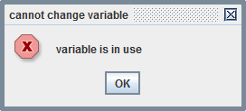

Orchestra mapping

Topic content
Concept
A graphical mapping is a mapping defined using a graphical editor. Actually there are three different sub types:
•The so called Orchestra mapping is the standard graphical mapping with source and target types.
•An IDOC mapping is a graphical mapping which transforms SAP-Messages of type IDOC_INBOUND_ASYNCHRONOUS to Messages defining the structures of SAP-IDOCs. This message types are imported directly from a SAP system (see ). They contain additional information which is used from Orchestra to automatically create the complete mapping.
• A Target only mapping is a special mapping having no source message but only an output message. It is typically used to create dummy messages or to create small messages using some parameters.
Creation
To create a new Orchestra mappings select the group message mappings and click on the right mouse button. Then a popup menu opens where you select the item .
A dialog opens where you must enter the name and optionally a description of the new mapping.

enter the name of mapping
Then click on the button .
In the next dialog you select the type of mapping you want to create and click on the button .
select a mapping type
Here you have to select the type Orchestra mapping.
In the next step you select the Message type describing the source structure.
select the source type of the mapping
Then you select the Message type describing the target structure

select the target type of the mapping
Finally you may decide to create Node mappings automatically.

Options to create initial node mappings automatically
If you select the option the wizard connects elements also if their names differ only in case.
After clicking on the button the graphical editor is opened where you can further edit the mapping.
Configuration
To configure the mapping click on the entry in the scenario element tree.
The graphical editor area
This is the main area where a graphical mapping is displayed and modified.
The following picture shows a small mapping which maps a Message from a SAP system to a Message describing a Database table. In the SAP message there is one element tables containing many elements named T_KEY_PO. For each of these elements the mapping creates a new element named XAMA_SAP_BESTELL_TEMP in the output message. Such a relationship is called a node mapping.
In the configuration area of the editor we see two node mappings. There is always a node mapping which creates the root node. And there may exist a lot of node mappings creating other nodes. In our example there is a second node mapping which is responsible for creating the child nodes XAMA_SAP_BESTELL_TEMP.
In this small example you can also see that the actual data values written into the target message may come from different sources.
•They may come directly from the elements of the source message, this is called a direct mapping.
•There might exist an intermediate transformation of the values. Our example shows an invocation of the function toLong which parses a string value and creates a long integer value. Another example of such a function call is the usage of current-date in the mapping. current-date is actually a function which has no input parameters but delivers simply the date of today.
•The third type of assignment we see here is the assignment to the STATE element. It accesses a variable named State which is actually transferred to the mapping when it is invoked.
For more details on how to assign values in a graphical mapping see Attribute mappings .
Reloading a message type
If a mapping is created the structure of the source and the target messages are stored together with this mapping. If the according message type is changed later the mapping is not aware of this change. To change the mapping accordingly you have to reload the message type. To do this select the root element of the source or of the target tree, then click the right mouse button. You will see a Field named Reload type. If you click on it a dialog appears asking Do you want to replace this message type? If you then click on the button and Orchestra encounters a conflict a page denoting the conflict appears. Some conflicts are not resolvable. E.g. if in the message type an element was removed that actually is used in the mapping the Reload cannot be done. Other conflicts can be resolved by the user.
If no conflicts exist or all conflicts are resolved by the user a list of activities appears which tell you what is to be done.
If you then click on the button the message type will be updated.
For a given element type in the source message type a node mapping creates one or more elements in the target message depending on the number of elements in the source message.
Creation of node mappings
To create a node mapping select the source node and the target node and click the Add button in the configuration area. Now the node mapping will be created. In the graphical area it is depicted by a red line connecting the two nodes.
creating a new node mapping
If the two nodes have elements with equal names you may click the Auto button and Orchestra will automatically create attribute assignments for these elements. In the picture above this is show also through four black lines connecting the elements mid, orderid, itemtype and count. Elements in the target element which in the according message type are defined to be required are show with a red background colour. Elements which are optional according to the message type are shown with a dotted border.
You also can see that attribute mappings within a node mapping may reference elements from a parent element. We will discuss attribute mappings later in the section called Attribute mappings.
If you have several node mappings you can display the attribute mappings of that node mapping by selecting it in the list of node mappings in the configuration area.
Filters for node mappings
Sometimes not all nodes from the source message are to be transferred to the target message. To facilitate this, Orchestra allows to set a filter on a node mapping. To filter a node mapping select the node mapping in the configuration area and click on the button. The dialog appears where the user can add or edit a filter expression.
setting an XPath filter on a node mapping
In the text field you can enter or modify a filter expression using XPath. The filter expression is an expression on the current source node of the node mapping. You may also reference the mapping variables using the XPath variable notation $varname. Also note that in XPath you must use prefixes to reference a namespace. Therefore in the dialog you can define prefixes for the namespaces used in the message.
If a filter is set the node mapping in the mapping graph is depicted by a dashed line.
A node mapping having a filter is depicted with a dashed line
To remove the filter simply delete the filter expression int the editor dialog.
Using the alternative view
If a graphical mapping consists of many node mappings it may be useful to work with the so called alternative view.
The upper part of the view shows the whole mapping, but only node mappings are shown, so the view is more concise.
splitted view of a graphical mapping
In the lower part of the mapping the currently selected node mapping is visible.
To switch between the two alternative views select the mapping in the scenario tree on the left of the designer, click the right mouse button and select .
Changing the hierarchy of node mappings
Node mappings form a hierarchical tree. The execution of a node mapping depends of the execution of a parent node mapping. The hierarchical relationship of the node mappings is defined by the hierarchy of the target nodes. But in case of node mappings having the same target node it might be necessary to define the dependencies between the node mappings creating the same type of node. To change this, select the node mapping and then click on the Edit button.

If the Edit dialog for node mappings you have the possibility to change the parent of a node mapping or the XPath used to navigate from last source node to the source of this node mapping. In many cases there are actually no alternatives, so the select boxes for this alternatives are disabled.
Attribute mappings are defined within a node mapping. They define the values which are to be mapped onto the fields of the target message.
In the following paragraphs you find information about the different types of attribute mappings.
To create attribute mappings you use the tools from the toolbar in the top area of the mapping editor.
Simply click on the tool to use it, afterwards the cursor will change to indicate that a tool was selected.
Direct mappings
A direct mapping is represented by a simple line from the source to the target field.
To create a direct mapping
1.Select the node mapping you want to modify
2.In the toolbar select the Assignment tool (Depicted by an arrow ).
3.In the mapping graph click on the source attribute and hold the mouse button
4.Draw the line to the intended target attribute and release the mouse button
|
If the assignment doesn't work, Orchestra shows a message in the Info field located in the configuration area of the designer |
Typically there are two reasons for errors:
1.There is no node mapping selected
2.Or the data type of the source is not compatible with the target field.
To find out the data type of an element or an attribute, double click on the element and its data type is displayed. It might be necessary to apply a conversion function; see Using predefined functions in this paragraph for details.
Mapping fixed values
Of course you can assign fixed constant values to a target field.
To map a constant value
1.Select the node mapping you want to modify.
2.In the toolbar select the value tool (Depicted by a rounded rectangle with grey background and text val ).
3.Click in the mapping graph; a symbol for the new value will be added in the graph.
4.Double click on the new value symbol to change the value and its data type. Note that the value has to be entered in the form required from the XML schema type. (See XML Schema Part 2: Datatypes for details)
5.In the mapping graph connect the value with the target attribute using the Assignment tool (Depicted by an arrow).
Note that the the value type has to be compatible with the type of the target element.
Using simple operations
A simple operation is an Addition or Multiplication of any number of operands.
To map the value of such an operation
1.Select the node mapping you want to modify
2.In the toolbar select the Commutative expression tool (Depicted by a circle).
3.Click in the mapping graph; a symbol for the new operation will be added in the graph.
4.Double click on the new operation symbol to change the operator and select an optional constant operator
5.In the mapping graph connect the source attributes with the the new operation. Note that a simple operation may have an arbitrary number number of parameters with random order because only Addition and Multiplication are allowed.
6.Connect the operation with the intended target attribute using the assignment tool (Depicted by an arrow).
|
Note: This tool is often useful to multiply an attribute value with a fixed number or add a fixed number: |
double a numeric value
Mapping variables
You can also assign variable values to a target field. Note that the variable must be defined before (see paragraph Using variables in this section).
To map a variable value
1.Select the node mapping you want to modify
2.In the toolbar select the Variable tool (Depicted by a rectangle with text var  ).
).
3.Click in the mapping graph; a symbol for the variable will be added in the graph.
4.Double click on the new variable symbol to select the actual variable referenced.
5.In the mapping graph, connect the variable symbol with the target attribute using the Assignment tool (Depicted by an arrow).
|
Note that the the type of the variable has to be compatible with the type of the target element. |
Attribute mapping using predefined functions
There is a bunch of predefined functions you may use in the mapping (see Mapping functions for details).
The following picture shows how the predefined functions current-date and addDaysToDate are used. You also can see here that the different types of expressions like, Constant values, Variable references, Simple operations and Function calls can be combined to compute the expected value. Some functions, like current-date, have no parameters at all.
To select and use such a function do the following:
1.Select the node mapping you want to modify
2.In the panel named select the wanted function
3.Click in the mapping graph; a symbol for the Function call will be added in the graph
4.In the mapping graph connect the source expressions with the parameters of the function
5.Connect the Function call symbol with the target attribute using the Assignment tool (Depicted by an arrow)
Note that the the result type of the used function has to be compatible with the type of the target element.
Predefined functions are grouped according to their different purposes:
•There is a set of functions which are used to convert values between data types, e.g. to interpret a string as an integer value.
•Other functions modify values e.g. change a string to upper case
Attribute mapping using Java
You also may define your own functions using Java as a programming language. Actually you define anonymous functions which are usable only at one point in the mapping. If you want to reuse functions you may define them in Java Source elements. These new functions then are also visible in the panel named (on the right of the Mapping editor) and are usable in the same way than the predefined functions.
Using a user defined function
To create and use our own Java function
1.Select the node mapping you want to modify
2.In the toolbar select the Java tool (Depicted by a rounded rectangle with the text func ).
3.Click in the mapping graph; a symbol for the new java expression will be added in the graph.
4.Double click on the new symbol and edit it
5.Connect the java expression with the intended target attribute using the Assignment tool (Depicted by an arrow).
6.In the mapping graph click on the source attributes and connect it with the parameters of the new java expression.
To edit the function double click on the symbol representing it in the mapping graph.
Dialog to edit a user defined java method used in a mapping
First of all you should set a descriptive title to be displayed in the mapping graph.
Then you must select the result type, add the necessary parameters and provide the implementation of the function.
|
Regarding mappings it is important to know, that the order of execution is defined by the structure of the target message. Therefore every expression used within a mapping must have a connection to the target message, otherwise the expression is not executed! |
Sometimes you want to access and map values of attributes depending on values of the current source node.
E.g. in the following example we have a source message with n values named pkey followed by n values named pval. The mapping is expected to map keys and values having the same position together into one target node of type Property.
Example mapping containing an XPath expression
The XPath used in the XPath expression named get_pval is ../pval[getFilterPos()] . The XPath is executed on the current Record node. It searches for the pval belonging to the current Record and having the same position. Actually the method getFilterPos delivers the position of the current node relative to its parent.
To create and use such an XPath you
1.Select the node mapping you want to modify
2.In the toolbar select the XPath tool (Depicted by a arrowed rectangle ).
3.Click in the mapping graph; a symbol for the new XPath expression will be added in the graph.
4.Double click on the new symbol and edit it
5.Connect the XPath expression with the intended target attribute using the Assignment tool (Depicted by an arrow).
6.In the mapping graph click on the source attributes and connect it with the parameters of the new XPath expression.
To edit the XPath double click on the symbol representing it in the mapping graph.
Dialog to edit an XPath element used in a mapping
First of all you should set a descriptive title to be displayed in the mapping graph.
Then you must add a namespace and assign a prefix if a namespace is used in the message. Otherwise the Xpath will not find the referenced nodes. Then add the XPath and check if it is syntactically correct by clicking on the validate button. You may change the result type. That means that the result is automatically changed changed to the expected type. You also may add additional parameters which then can be referenced from the XPath (like any other variable) by prefixing it with a Doller ($) sign.
|
Having complex mapping conditions like the one shown above you should consider using an Extended Java mapping instead of a graphical mapping. |
Calling lookup tables, channels and process models within a graphical mapping
Sometimes you want to map values produced from the invocation of a Lookup tables, a Channel or a Process model.
E.g. in the following example we have a source message with an attribute ident which is used to invoke a Database Outbound channel. The channel invocation returns two values name and type which then are assigned to the elements rname and rtype of the target element Record.
Example mapping containing a channel invocation
To create and use such an invocation you
1.Select the node mapping you want to modify
2.In the scenario element tree you select the channel, lookup table or process model you want to invoke.
3.Click in the mapping graph; a symbol for the new invocation will be added in the graph.
4.Connect the output parameters of the invocation with the intended target attributes using the Assignment tool (Depicted by an arrow).
5.In the mapping graph click on the source attributes and connect it with the input parameters of the invocation.
|
If you want to test a mapping containing an invocation in the designer, you first must start the runtime engine! |
Filters for attribute mappings
You may also set a filter on a attribute mapping if it shall be executed only under certain conditions. This might be necessary if the source of an attribute mapping has many values and you want to select a single one fulfilling a particular condition.
A filtered attribute mapping is depicted by a dashed line. The following picture shows an attribute mapping together with the dialog to edit the filter condition. In this example the source of the attribute mapping is an attribute of a child element. Therefore the mapping has a set of values if an item (the source of the node mapping) has several child elements of type references. The filter condition states that we want to map the itemid of the reference having a reftype with the value contains. As you can see, the context node of the XPath filter is not the itemid itself but its parent node.
If there were no filter condition, the mapping would map the first itemid it detects.
Attribute mapping with filter condition
To create or edit a filter on an attribute mapping double click on the line. Then the dialog to edit a filter condition appears. Add the XPath expression and click the button. To check if the XPath is syntactically correct click on the button .
|
Note that the context node of the XPath filter is not the source attribute itself but its parent node! |
To remove a filter simply delete the filter condition and click the button.
By default a graphical Orchestra mapping has only one variable defined, it is called MSG and contains the input message as value. Normally you don't need to refer it explicitly. If you have an XPath mapping you sometimes you need to reference it as $MSG.
Initially the list of variables contains only MSG
If the mapping needs additional parameters to be used in the mapping or you want to return additional output values you must add additional variables. Simply click on the button and a dialog opens where you can enter the name, type, usage and description of the new variable.
Dialog to create a new mapping variable
As type you may choose one of the following:
Variables can have one of the following types. Most of them are types used in XML Schema because XML is the way Orchestra stores data internally and this way it is easy to extract values from XML or create XML documents using a Message mapping. For the types used in XML schema see XML Schema Part 2: Datatypes.
•string A plain Unicode string
•int A number with values between -2147483648 and 2147483647; a subset of long
•long A 32 bit integral number
•integer An unlimited integral number
•decimal A subset of the real numbers, which can be represented by decimal numerals using period as a decimal indicator. An optional leading sign is allowed.
•boolean has the values true or false
•double A double-precision 64-bit floating point value.x
•float A single-precision 32-bit floating point value
•date A date value with year, month, and day properties plus an optional timezone-valued timezone property
•dateTime An instant in time with integer-valued year, month, day, hour and minute properties, a decimal-valued second property, and an optional timezone property.
•time An instant of time that recurs every day.
•duration A duration of time. Can be given in units of year, month, day, hour, minute, and second components, respectively.
•binary A sequence of bytes or a byte array. Within the graphical mapping this data type is named base64Binary
•any internally represented by a Java object.
•message may contain structured data or binary data. Structured messages are internally represented by a DOM tree. See Message for details.
•messagelist A ordered sequence of messages. See Message list for details.
•error An error object of Orchestra. May contain error code, error string and a Message. Also a scenario context an an error context may be contained.
•UserInfo An Object carrying user information. May contain user id, user name and a set of allowed roles.
The property Required is important in the context of mappings: It influences the internal java type used for simple numeric types like , , , or . If Required is set to true exactly this primitive types are used. If Required is set to false the according Object types are used, meaning that variables of this type may be null.
The property Usage defines how a variable is used. Allowed values are LOCAL, INPUT, OUTPUT and IN_OUT. If you want to transfer values from a Process model to a mapping you must set this Property to INPUT or IN_OUT. If you want to return values from the mapping back to the calling process model this Property must have the value OUTPUT or IN_OUT.
To change a variable simply click on the button.
If you want to a variable and it is still in use within the mapping, an error message appears:

Variable initialization
The tab is hardly ever used, because the originally intended use of this feature is normally done in a procedural mapping.
Nevertheless we explain its usage briefly. The tab is used when the value of a variable has to be set to an initial value at the start of each node mapping.
Imagine you have a message containing a set of orders and each order contains a list of order items. The items contain an item position and the mapping has to set the order position of the previous item into the the target item.
To avoid that an order item at position 1 gets the value from the last order as prevPos we initialize the value of this variable to 0 in the Node mapping to Order.
|
Note that each node mapping may have its own initialization script. So you first must select the appropriate node mapping and then edit the matching initialization script! |
|
If you need to use a variable initialization in your graphical mapping you should consider to use a procedural mapping. The graphical mapping is basically declarative. If you need to remember state using a variable an Extended Java mapping is probably the better choice. |
Finally there are two rarely used attributes of the graphical mapping:
Settings affecting the behaviour of the mapping
Normally both settings are Disabled.
If XSI handling is set to the value write schema instance type then in the created document each element has an attribute named type with namespace http://www.w3.org/2001/XMLSchema-instance.
The attribute contains the type of the written value. See Schema-Related Markup in Documents Being Validated
So a structured message created with XSI handling might contain the following XML document:
<?xml version="1.0" encoding="ISO-8859-1"?>
<mt_module_list xmlns="http://weirdsoft.com/plist"
xmlns:xsd="http://www.w3.org/2001/XMLSchema"
xmlns:xsi="http://www.w3.org/2001/XMLSchema-instance"
deliveryDate="2015-12-02" packdate="2015-11-30" packtype="PT1">
<package xsi:type="xsd:string">pi1</package>
<Item>
<mid xsi:type="xsd:int">101</mid>
<orderid xsi:type="xsd:string">oi1</orderid>
<itemid xsi:type="xsd:string">id2</itemid>
</Item>
</package>
</mt_module>
The property Transaction may have three values:
•Disabled means that a failure in a node mapping causes the whole mapping to fail with an error.
•Create always a transaction on a root level mapping means that all node mappings creating nodes directly under the root are created in one transaction. All node mappings executed in the context of such a root mapping are then executed in the transaction of its parent mappings. If a transaction fails the mapping is not canceled as a whole but the creation of the target node is canceled and reset. Resetting of a target node means that it is not visible at all in the result message of the mapping.
•Use local settings of nodemapping means that the transactional behavior of a node mapping is defined in the properties of the node mapping itself. To change the transactional behavior of a node mapping, select the node mapping in the configuration area and click on the button. The dialog appears where the user can adapt the Transaction handling.
Upper part of the dialog to edit a node mapping
Here the user can select Use transaction settings from master or One transaction per record (and its children). The first one means that the node mapping is executed in the transaction of the parent mapping if the parent mapping is executed in a transaction at all. The second alternative (One transaction per record) means that a new transaction is created for the node mapping and its dependent mappings. If a transaction fails the message mapping is not canceled as a whole but the creation of the target node is canceled and reset as if it was not created.
If a failure arises within a transaction, the cause of that failure and the context of it is then written as a node into the error message which is accessible through the output variable SKIPPEDRECORDS.